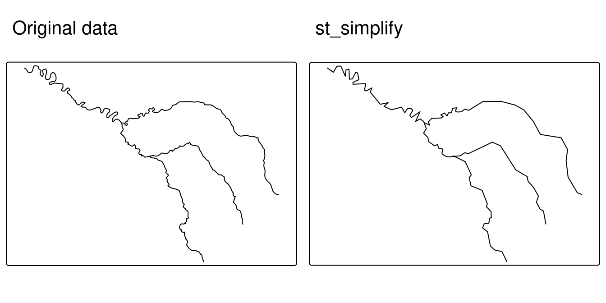
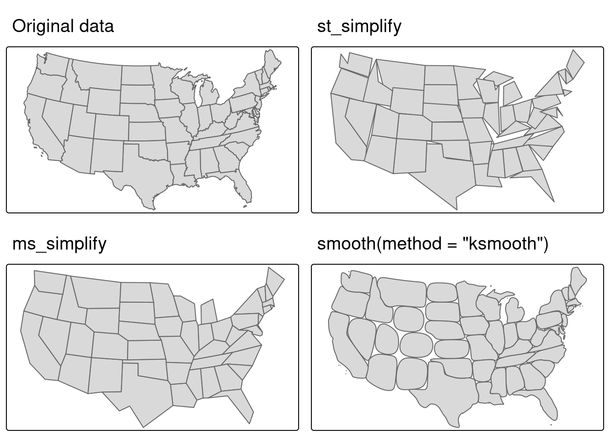
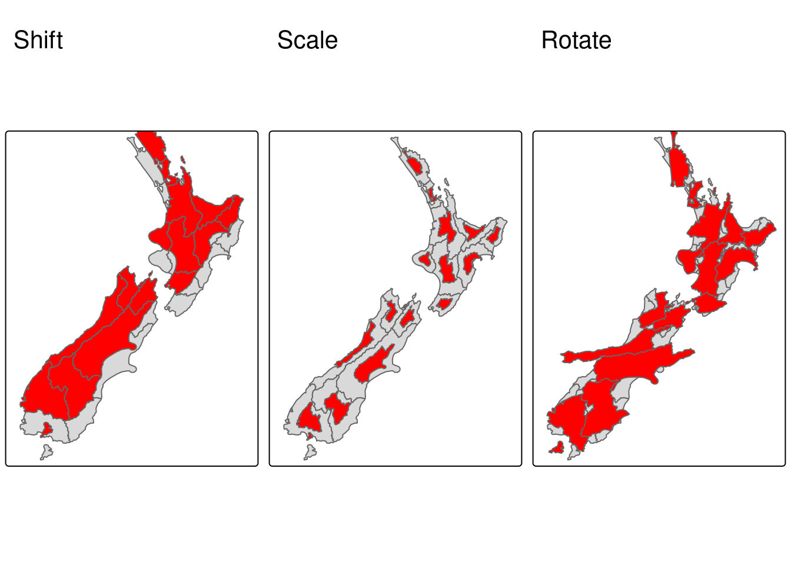
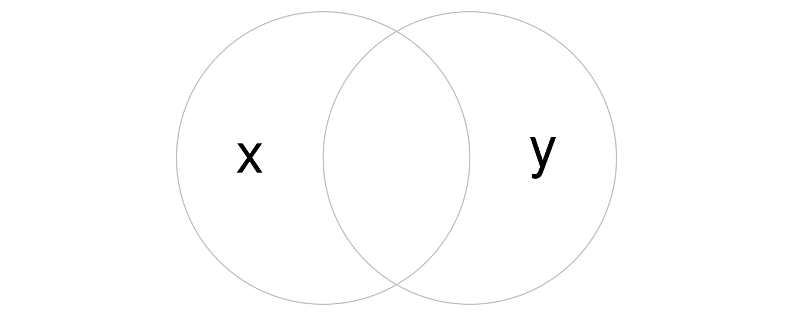
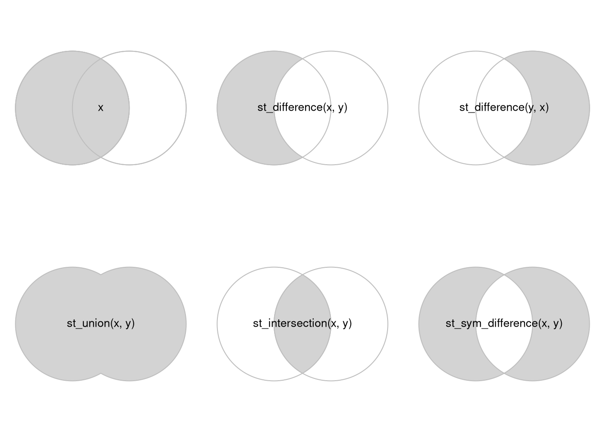
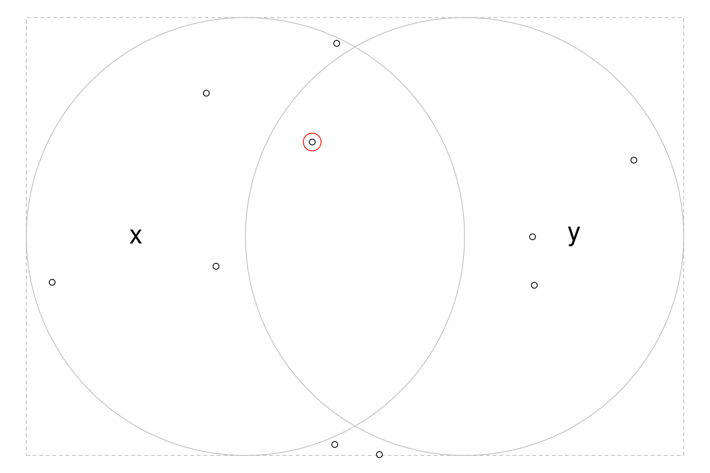
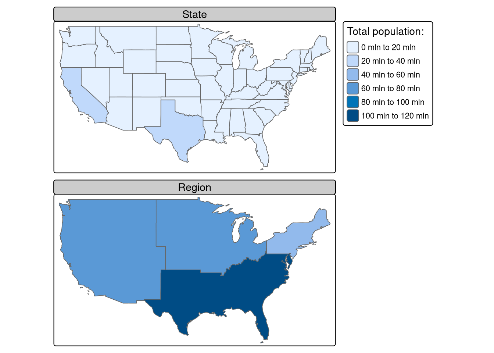
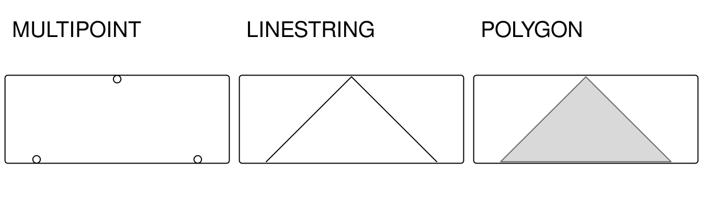
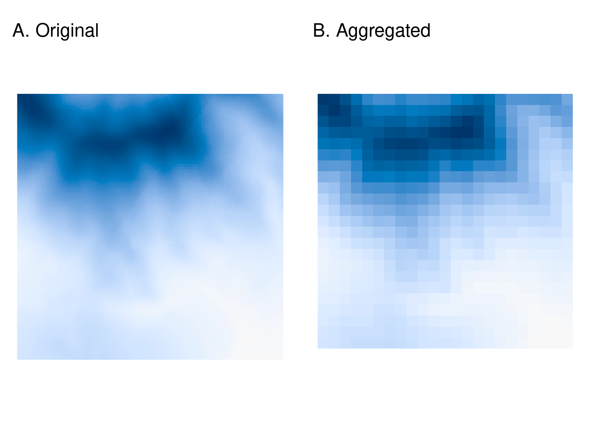

library(sf)
library(terra)
library(dplyr)
library(spData)
library(spDataLarge)Operaciones geométricas
Introducción
Hasta ahora, hemos visto la estructura de los conjuntos de datos geográficos, y cómo manipularlos basándose en sus atributos no geográficos y relaciones espaciales. Este capítulo se centra en la manipulación de los elementos geográficos de los objetos geográficos, por ejemplo simplificando y convirtiendo geometrías vectoriales, recortando conjuntos de datos ráster y convirtiendo objetos vectoriales en rásteres y rásteres en vectores.
Operaciones geométricas sobre datos vectoriales
Esta sección trata de las operaciones que de alguna manera cambian la geometría de los objetos vectoriales (sf). Es más avanzada que las operaciones con datos espaciales presentadas anteriormente, porque aquí profundizamos en la geometría: las funciones discutidas en esta sección trabajan sobre objetos de clase sfc además de sobre objetos de clase sf.
Simplificación
La simplificación es un proceso de generalización de objetos vectoriales (líneas y polígonos) que suele utilizarse en mapas de menor escala. Otra razón para simplificar objetos es reducir la cantidad de memoria, espacio en disco y ancho de banda de red que consumen: puede ser conveniente simplificar geometrías complejas antes de publicarlas como mapas interactivos. El paquete sf proporciona st_simplify(), que utiliza la implementación GEOS del algoritmo Douglas-Peucker para reducir el número de vértices. st_simplify() utiliza dTolerance para controlar el nivel de generalización en las unidades del mapa. La figura de abajo ilustra la simplificación de una geometría LINESTRING que representa el río Sena y sus afluentes. La geometría simplificada se creó mediante el siguiente comando:
seine_simp = st_simplify(seine, dTolerance = 2000) # 2000 m
El objeto seine_simp resultante es una copia del seine original pero con menos vértices.
La simplificación también es aplicable a los polígonos. Esto se ilustra utilizando us_states, que representa los Estados Unidos contiguos. GEOS asume que los datos están en un CRS proyectado y esto podría llevar a resultados inesperados cuando se utiliza un CRS geográfico. Por lo tanto, el primer paso es proyectar los datos en algún CRS proyectado adecuado, como US National Atlas Equal Area (EPSG = 2163):
us_states2163 = st_transform(us_states, "EPSG:2163")st_simplify() funciona igualmente bien con polígonos proyectados:
us_states_simp1 = st_simplify(us_states2163, dTolerance = 100000) # 100 kmUna limitación de st_simplify() es que simplifica los objetos por geometría. Esto significa que se pierde la “topología”, lo que da lugar a la superposición y unidades areales con huecos. ms_simplify() de rmapshaper proporciona una alternativa que supera este problema. Por defecto utiliza el algoritmo Visvalingam, que supera algunas limitaciones del algoritmo Douglas-Peucker. El siguiente trozo de código utiliza esta función para simplificar us_states2163. El resultado tiene sólo el 1% de los vértices de la entrada (fijados usando el argumento keep) pero su número de objetos permanece intacto porque fijamos keep_shapes = TRUE:1
# proportion of points to retain (0-1; default 0.05)
us_states_simp2 = rmapshaper::ms_simplify(us_states2163, keep = 0.01,
keep_shapes = TRUE)Una alternativa a la simplificación es el suavizado de los límites de las geometrías poligonales y lineales, que se implementa en el paquete smoothr. El suavizado interpola los bordes de las geometrías y no conduce necesariamente a un menor número de vértices, pero puede ser especialmente útil cuando se trabaja con geometrías que surgen de vectorizar espacialmente un raster. smoothr implementa tres técnicas de suavizado: una regresión kernel gaussiana, el algoritmo de corte de esquinas de Chaikin y la interpolación spline. Los algoritmos de suavizado tampoco conservan la “topología”. La función principal de smoothr es smooth(), donde el argumento method especifica qué técnica de suavizado utilizar. A continuación se muestra un ejemplo de uso de la regresión kernel gaussiana para suavizar las fronteras de los estados de EE.UU. utilizando method=ksmooth. El argumento smoothness controla el ancho de banda de la gaussiana que se utiliza para suavizar la geometría y tiene un valor por defecto de 1.
us_states_simp3 = smoothr::smooth(us_states2163,
method = "ksmooth", smoothness = 6)La comparación visual del conjunto de datos original con las versiones simplificada y suavizada se muestra abajo. Pueden observarse diferencias entre los resultados de los algoritmos Douglas-Peucker (st_simplify), Visvalingam (ms_simplify) y regresión kernel gaussiana (smooth(method=ksmooth).

Centroides
Las operaciones de centroide identifican el centro de los objetos geográficos. Al igual que las medidas estadísticas de tendencia central, existen muchas formas de definir el centro geográfico de un objeto. Todas ellas crean representaciones de punto único de objetos vectoriales más complejos.
La operación de centroide más utilizada es el centroide geográfico. Este tipo de operación centroide representa el centro de masa de un objeto espacial. Los centroides geográficos tienen muchos usos, por ejemplo para crear una representación simple de puntos de geometrías complejas, o para estimar distancias entre polígonos. Pueden calcularse con la función sf st_centroid(), como se demuestra en el código siguiente, que genera los centroides geográficos de regiones de Nueva Zelanda y afluentes del río Sena, ilustrados con puntos negros.
nz_centroid = st_centroid(nz)
seine_centroid = st_centroid(seine)A veces, el centroide geográfico cae fuera de los límites de sus objetos padre (piense en un donut). En tales casos, las operaciones punto sobre superficie pueden utilizarse para garantizar que el punto se encuentra en el objeto padre (por ejemplo, para etiquetar objetos multipoligonales irregulares como los estados insulares), como ilustran los puntos rojos de la figura abajo. Observe que estos puntos rojos siempre se encuentran en sus objetos padre. Se crearon con st_point_on_surface() de la siguiente manera:
nz_pos = st_point_on_surface(nz)
seine_pos = st_point_on_surface(seine)
Buffers
Los buffers son polígonos que representan el área dentro de una distancia determinada de un elemento geométrico: independientemente de si la entrada es un punto, una línea o un polígono, la salida es un polígono. El buffering suele utilizarse para el análisis de datos geográficos. ¿Cuántos puntos se encuentran a una distancia determinada de esta línea? ¿Qué grupos demográficos se encuentran a una distancia de viaje de esta nueva tienda? Este tipo de preguntas pueden responderse y visualizarse creando buffers alrededor de las entidades geográficas de interés.
La próxima figura ilustra los buffers de diferentes tamaños (5 y 50 km) que rodean el río Sena y sus afluentes. Estos buffers se crearon con los comandos que se indican a continuación, que muestran que el comando st_buffer() requiere al menos dos argumentos: una geometría de entrada y una distancia, proporcionada en las unidades del CRS (en este caso metros):
seine_buff_5km = st_buffer(seine, dist = 5000)
seine_buff_50km = st_buffer(seine, dist = 50000)
Transformaciones afines
Una transformación afín es cualquier transformación que conserva las líneas y el paralelismo. Sin embargo, los ángulos o la longitud no se conservan necesariamente. Las transformaciones afines incluyen, entre otras, el desplazamiento (traslación), la escala y la rotación. Además, es posible utilizar cualquier combinación de ellas. Las transformaciones afines son una parte esencial de la geocomputación. Por ejemplo, el desplazamiento es necesario para la colocación de etiquetas, el escalado se utiliza en cartogramas de áreas no contiguas, y muchas transformaciones afines se aplican al reproyectar o mejorar la geometría que se creó basándose en un mapa distorsionado o mal proyectado. El paquete sf implementa transformaciones afines para objetos de las clases sfg y sfc.
nz_sfc = st_geometry(nz)El desplazamiento mueve cada punto la misma distancia en unidades de mapa. Puede hacerse añadiendo un vector numérico a un objeto vectorial. Por ejemplo, el código siguiente desplaza todas las coordenadas y 100.000 metros hacia el norte, pero deja intactas las coordenadas x.
nz_shift = nz_sfc + c(0, 100000)La escala amplía o reduce los objetos en un factor dado. Puede aplicarse global o localmente. El escalado global aumenta o disminuye todos los valores de las coordenadas en relación con las coordenadas de origen, manteniendo intactas todas las relaciones topológicas de las geometrías. Puede realizarse por sustracción o multiplicación de un objeto sfg o sfc.
El escalado local trata las geometrías de forma independiente y requiere puntos alrededor de los cuales se van a escalar las geometrías, por ejemplo, los centroides. En el ejemplo siguiente, cada geometría se reduce en un factor de dos alrededor de los centroides. Para ello, primero se desplaza cada objeto de modo que su centro tenga coordenadas 0, 0 ((nz_sfc - nz_centroid_sfc)). A continuación, los tamaños de las geometrías se reducen a la mitad (* 0,5). Por último, el centroide de cada objeto se desplaza a las coordenadas de los datos de entrada (+ nz_centroid_sfc).
nz_centroid_sfc = st_centroid(nz_sfc)
nz_scale = (nz_sfc - nz_centroid_sfc) * 0.5 + nz_centroid_sfcLa rotación de coordenadas bidimensionales requiere una matriz de rotación:
\[ R = \begin{bmatrix} \cos \theta & -\sin \theta \\ \sin \theta & \cos \theta \\ \end{bmatrix} \]
Ésta gira los puntos en el sentido de las agujas del reloj. La matriz de rotación se puede implementar en R como:
rotation = function(a){
r = a * pi / 180 #degrees to radians
matrix(c(cos(r), sin(r), -sin(r), cos(r)), nrow = 2, ncol = 2)
} La función rotation acepta un argumento a - un ángulo de rotación en grados. La rotación puede realizarse alrededor de puntos seleccionados, como los centroides.
nz_rotate = (nz_sfc - nz_centroid_sfc) * rotation(30) + nz_centroid_sfc
Por último, las geometrías recién creadas pueden sustituir a las antiguas con la función st_set_geometry():
nz_scale_sf = st_set_geometry(nz, nz_scale)Clipping
El recorte espacial es una forma de subset espacial que implica cambios en las columnas geometry de al menos algunas de las características afectadas.
El recorte sólo puede aplicarse a características más complejas que los puntos: líneas, polígonos y sus equivalentes “multi”. Para ilustrar el concepto, empezaremos con un ejemplo sencillo: dos círculos superpuestos con un punto central a una unidad de distancia el uno del otro y un radio de uno.
b = st_sfc(st_point(c(0, 1)), st_point(c(1, 1))) # create 2 points
b = st_buffer(b, dist = 1) # convert points to circles
plot(b, border = "grey")
text(x = c(-0.5, 1.5), y = 1, labels = c("x", "y"), cex = 3) # add text
Imagina que quieres seleccionar no un círculo u otro, sino el espacio cubierto por x y y. Para ello se utiliza la función st_intersection(), ilustrada con objetos denominados x e y, que representan los círculos izquierdo y derecho.
x = b[1]
y = b[2]
x_and_y = st_intersection(x, y)
plot(b, border = "grey")
plot(x_and_y, col = "lightgrey", border = "grey", add = TRUE) # intersecting area
El siguiente fragmento de código demuestra cómo funciona esto para todas las combinaciones del diagrama de Venn que representan x e y, inspirado en la Figura 5.1 del libro R for Data Science.

Subsetting y clipping
Recortar objetos puede cambiar su geometría, pero también puede subdividir objetos, devolviendo sólo las características que se cruzan (o se cruzan parcialmente) con un objeto de recorte/subconjunto. Para ilustrar este punto, vamos a subdividir puntos que cubren el cuadro delimitador de los círculos x e y en la figura anterior. Algunos puntos estarán dentro de un solo círculo, otros dentro de los dos y otros dentro de ninguno. A continuación se utiliza st_sample() para generar una distribución aleatoria de puntos dentro de la extensión de los círculos x e y, planteando la siguiente pregunta: ¿cómo subconjuntar los puntos para devolver sólo el punto que se cruza con ambos x e y?
bb = st_bbox(st_union(x, y))
box = st_as_sfc(bb)
set.seed(2017)
p = st_sample(x = box, size = 10)
p_xy1 = p[x_and_y]
plot(box, border = "grey", lty = 2)
plot(x, add = TRUE, border = "grey")
plot(y, add = TRUE, border = "grey")
plot(p, add = TRUE)
plot(p_xy1, cex = 3, col = "red", add = TRUE)
text(x = c(-0.5, 1.5), y = 1, labels = c("x", "y"), cex = 2)
bb = st_bbox(st_union(x, y))
box = st_as_sfc(bb)
set.seed(2017)
p = st_sample(x = box, size = 10)
x_and_y = st_intersection(x, y)El siguiente fragmento de código muestra tres formas de conseguir el mismo resultado. Podemos utilizar la intersección de x y y (representados por x_and_y en el fragmento de código anterior) como un objeto de subconjunto directamente, como se muestra en la primera línea en el fragmento de código a continuación. También podemos encontrar la intersección entre los puntos de entrada representados por p y el objeto de subconjunto/recorte x_and_y, como se muestra en la segunda línea del fragmento de código siguiente. Este segundo enfoque devolverá características que se intersecan parcialmente con x_and_y pero con geometrías modificadas para características espacialmente extensas que cruzan la frontera del objeto de subconjunto. El tercer enfoque consiste en crear un objeto de subconjunto utilizando el predicado espacial binario st_intersects(). Los resultados son idénticos (salvo diferencias superficiales en los nombres de los atributos), pero la implementación difiere sustancialmente:
p_xy1 = p[x_and_y] # way #1
p_xy2 = st_intersection(p, x_and_y) # way #2
sel_p_xy = st_intersects(p, x, sparse = FALSE)[, 1] &
st_intersects(p, y, sparse = FALSE)[, 1] # way #3
p_xy3 = p[sel_p_xy]Uniones geométricas
La agregación espacial puede disolver silenciosamente las geometrías de los polígonos que se tocan en el mismo grupo. Esto se demuestra en el fragmento de código siguiente, en el que 49 us_states se agregan en cuatro regiones utilizando las funciones base y dplyr:
regions = aggregate(x = us_states[, "total_pop_15"], by = list(us_states$REGION),
FUN = sum, na.rm = TRUE)
regions2 = us_states |>
group_by(REGION) |>
summarize(pop = sum(total_pop_15, na.rm = TRUE))
¿Qué ocurre con las geometrías? Entre bastidores, tanto aggregate() como summarize() combinan las geometrías y disuelven los límites entre ellas utilizando st_union(). Esto se demuestra en el fragmento de código siguiente, que crea un oeste de EE.UU. unido:
us_west = us_states[us_states$REGION == "West", ]
us_west_union = st_union(us_west)La función puede tomar dos geometrías y unirlas, como se demuestra en el siguiente fragmento de código que crea un bloque occidental unido que incorpora Texas:
texas = us_states[us_states$NAME == "Texas", ]
texas_union = st_union(us_west_union, texas)Transformaciones de tipo
Geometry casting es una potente operación que permite transformar el tipo de geometría. Está implementada en la función st_cast() del paquete sf. Es importante destacar que st_cast() se comporta de forma diferente en objetos de geometría simple (sfg) y objetos de geometría simple en columna (sfc).
Vamos a crear un multipunto para ilustrar cómo funciona el cambio de geometría en objetos de geometría simple (sfg):
multipoint = st_multipoint(matrix(c(1, 3, 5, 1, 3, 1), ncol = 2))En este caso, st_cast() puede ser útil para transformar el nuevo objeto en una cadena de líneas o un polígono:
linestring = st_cast(multipoint, "LINESTRING")
polyg = st_cast(multipoint, "POLYGON")
La conversión de multipunto a cadena de líneas es una operación habitual que crea un objeto de línea a partir de observaciones de puntos ordenados, como mediciones GPS o medios geoetiquetados. Esto, a su vez, permite realizar operaciones espaciales como el cálculo de la longitud del camino recorrido. La conversión de multipunto o cadena de líneas a polígono se utiliza a menudo para calcular un área, por ejemplo a partir del conjunto de mediciones GPS tomadas alrededor de un lago o de las esquinas de un solar.
El proceso de transformación también puede invertirse utilizando st_cast():
multipoint_2 = st_cast(linestring, "MULTIPOINT")
multipoint_3 = st_cast(polyg, "MULTIPOINT")
all.equal(multipoint, multipoint_2)[1] TRUEall.equal(multipoint, multipoint_3)[1] TRUE
Note
Para geometrías simples (sfg), st_cast() también permite pasar geometrías de no multitipos a multitipos (por ejemplo, de POINT a MULTIPOINT) y de multitipos a no multitipos. Sin embargo, al pasar de multitipos a no multitipos, sólo el primer elemento del objeto antiguo permanecerá en el objeto de salida.
La conversión geométrica de la columna geométrica de características simples (sfc) y los objetos de características simples funciona igual que para sfg en la mayoría de los casos. Una diferencia importante es la conversión de multitipos a no multitipos. Como resultado de este proceso, los objetos múltiples de sfc o sf se dividen en muchos objetos no múltiples.
La tabla de abajo muestra las posibles transformaciones del tipo de geometría en objetos sf. Las geometrías de sf (representadas por la primera columna de la tabla) pueden transformarse en múltiples tipos de geometría, representados por las columnas de la tabla abajo. Algunas transformaciones no son posibles: no se puede convertir un único punto en una multilínea o un polígono, por ejemplo, lo que explica por qué las celdas [1, 4:5] de la tabla contienen NA. Algunas transformaciones dividen la entrada de una única característica en múltiples subcaracterísticas, “expandiendo” objetos sf (añadiendo nuevas filas con valores de atributos duplicados). Cuando una geometría multipunto que consta de cinco pares de coordenadas se transforma en una geometría “PUNTO”, por ejemplo, la salida contendrá cinco características.
| POI | MPOI | LIN | MLIN | POL | MPOL | GC | |
|---|---|---|---|---|---|---|---|
| POI(1) | 1 | 1 | 1 | NA | NA | NA | NA |
| MPOI(1) | 4 | 1 | 1 | 1 | 1 | NA | NA |
| LIN(1) | 5 | 1 | 1 | 1 | 1 | NA | NA |
| MLIN(1) | 7 | 2 | 2 | 1 | NA | NA | NA |
| POL(1) | 5 | 1 | 1 | 1 | 1 | 1 | NA |
| MPOL(1) | 10 | 1 | NA | 1 | 2 | 1 | 1 |
| GC(1) | 9 | 1 | NA | NA | NA | NA | 1 |
| Note: Values like (1) represent the number of features; NA means the operation is not possible. Abbreviations: POI, LIN, POL and GC refer to POINT, LINESTRING, POLYGON and GEOMETRYCOLLECTION. The MULTI version of these geometry types is indicated by a preceding M, e.g., MPOI is the acronym for MULTIPOINT. |
Intentemos aplicar transformaciones de tipo geométrico sobre un nuevo objeto, multilinestring_sf, como ejemplo :
multilinestring_list = list(matrix(c(1, 4, 5, 3), ncol = 2),
matrix(c(4, 4, 4, 1), ncol = 2),
matrix(c(2, 4, 2, 2), ncol = 2))
multilinestring = st_multilinestring(multilinestring_list)
multilinestring_sf = st_sf(geom = st_sfc(multilinestring))
multilinestring_sf| geom |
|---|
| MULTILINESTRING ((1 5, 4 3)… |
Puede imaginárselo como una red de carreteras o ríos. El nuevo objeto sólo tiene una fila que define todas las líneas. Esto restringe el número de operaciones que se pueden realizar, por ejemplo impide añadir nombres a cada segmento de línea o calcular longitudes de líneas individuales. La función st_cast() puede utilizarse en esta situación, ya que separa una mutlilínea en tres líneas:
linestring_sf2 = st_cast(multilinestring_sf, "LINESTRING")
linestring_sf2| geom |
|---|
| LINESTRING (1 5, 4 3) |
| LINESTRING (4 4, 4 1) |
| LINESTRING (2 2, 4 2) |
Multiple palettes called "set2 found: "brewer.set2", "hcl.set2". The first one, "brewer.set2", is returned.
El objeto recién creado permite la creación de atributos y mediciones de longitud:
linestring_sf2$name = c("Riddle Rd", "Marshall Ave", "Foulke St")
linestring_sf2$length = st_length(linestring_sf2)
linestring_sf2| geom | name | length |
|---|---|---|
| LINESTRING (1 5, 4 3) | Riddle Rd | 3.605551 |
| LINESTRING (4 4, 4 1) | Marshall Ave | 3.000000 |
| LINESTRING (2 2, 4 2) | Foulke St | 2.000000 |
Operaciones geométricas sobre datos raster
Las operaciones geométricas ráster incluyen el desplazamiento, la inversión, el reflejo, la escala, la rotación o la deformación de imágenes. Estas operaciones son necesarias para diversas aplicaciones, como la georreferenciación, que permite superponer imágenes en un mapa con un CRS conocido. Existen diversas técnicas de georreferenciación, entre las que se incluyen:
- Georrectificación basada en puntos de control terrestre conocidos
- Ortorectificación, que también tiene en cuenta la topografía local
- El co-registro de imágenes se utiliza para combinar imágenes del mismo objeto pero tomadas con sensores diferentes, alineando una imagen con otra (en términos de sistema de coordenadas y resolución).
R es bastante inadecuado para los dos primeros puntos, ya que a menudo requieren una intervención manual, por lo que suelen realizarse con la ayuda de software SIG específico. Por otro lado, alinear varias imágenes es posible en R y esta sección muestra, entre otras cosas, cómo hacerlo. Esto incluye a menudo cambiar la extensión, la resolución y el origen de una imagen. Por supuesto, también se requiere una proyección que coincida.
Intersecciones geométricas
Hemos mostrado cómo extraer valores de un ráster superpuesto por otros objetos espaciales. Para recuperar una salida espacial, podemos utilizar casi la misma sintaxis de subset. La única diferencia es que tenemos que dejar claro que queremos mantener la estructura matricial estableciendo el argumento drop en FALSE. Esto devolverá un objeto raster que contiene las celdas cuyos puntos medios se solapan con clip.
elev = rast(system.file("raster/elev.tif", package = "spData"))
clip = rast(xmin = 0.9, xmax = 1.8, ymin = -0.45, ymax = 0.45,
resolution = 0.3, vals = rep(1, 9))
elev[clip, drop = FALSE]class : SpatRaster
dimensions : 2, 1, 1 (nrow, ncol, nlyr)
resolution : 0.5, 0.5 (x, y)
extent : 1, 1.5, -0.5, 0.5 (xmin, xmax, ymin, ymax)
coord. ref. : lon/lat WGS 84 (EPSG:4326)
source(s) : memory
varname : elev
name : elev
min value : 18
max value : 24 Para la misma operación también podemos utilizar el comando intersect() y crop().
Extensión y origen
Cuando fusionamos o realizamos álgebra de mapas sobre rásters, su resolución, proyección, origen y/o extensión tienen que coincidir. De lo contrario, ¿cómo podríamos sumar los valores de un ráster con una resolución de 0.2 grados decimales a un segundo ráster con una resolución de 1 grado decimal? El mismo problema se plantea cuando queremos fusionar imágenes de satélite procedentes de distintos sensores con proyecciones y resoluciones diferentes. Los desajustes pueden resolverse alineando los rásters.
En el caso más sencillo, dos imágenes sólo difieren en su extensión. El código siguiente añade una fila y dos columnas a cada lado del ráster y establece todos los valores nuevos en NA.
elev = rast(system.file("raster/elev.tif", package = "spData"))
elev_2 = extend(elev, c(1, 2))
Al realizar una operación algebraica sobre dos objetos con extensiones diferentes en R, el paquete terra devuelve un error.
elev_3 = elev + elev_2Error: [+] extents do not matchSin embargo, podemos alinear la extensión de dos rásters con extend(). En lugar de decirle a la función cuántas filas o columnas deben añadirse (como se ha hecho antes), le permitimos que lo averigüe utilizando otro objeto raster. En este caso, ampliamos el objeto elev hasta la extensión elev_2. Los valores de las filas y columnas recién añadidas se fijan en NA.
elev_4 = extend(elev, elev_2)El origen de un raster es la esquina de la celda más cercana a las coordenadas (0, 0). La función origin() devuelve las coordenadas del origen. En el siguiente ejemplo existe una esquina de celda con coordenadas (0, 0), pero no es necesariamente el caso.
origin(elev_4)[1] 0 0Si dos rásters tienen orígenes diferentes, sus celdas no se solapan completamente, lo que haría imposible el álgebra de mapas. Para cambiar el origen, utilice origin().2 La próxima figura muestra el efecto de cambiar el origen de esta forma.
# change the origin
origin(elev_4) = c(0.25, 0.25)
Tenga en cuenta que al cambiar la resolución (apartado siguiente) también cambia con frecuencia el origen.
Agregación y desagregación
Los conjuntos de datos ráster también pueden diferir en cuanto a su resolución. Para igualar las resoluciones, se puede disminuir (aggregate()) o aumentar (disagg()) la resolución de un raster.3 Como ejemplo, aquí cambiamos la resolución espacial de dem (que se encuentra en el paquete spDataLarge) por un factor de 5. Además, el valor de la celda de salida debe corresponder a la media de las celdas de entrada (tenga en cuenta que también se podrían utilizar otras funciones, como median(), sum(), etc.):
dem = rast(system.file("raster/dem.tif", package = "spDataLarge"))
dem_agg = aggregate(dem, fact = 5, fun = mean)
La función disagg() aumenta la resolución de los objetos raster. Dispone de dos métodos para calcular los valores de las celdas recién creadas: el método por defecto (method = "near") simplemente da a todas las celdas de salida el valor de la celda de entrada y, por tanto, duplica los valores, lo que se traduce en una salida “en bloque”. El método bilineal utiliza los cuatro centros de píxel más cercanos de la imagen de entrada para calcular un promedio ponderado por la distancia. El valor de la celda de salida está representado por un cuadrado en la esquina superior izquierda.
dem_disagg = disagg(dem_agg, fact = 5, method = "bilinear")
identical(dem, dem_disagg)[1] FALSE
La comparación de los valores de dem y dem_disagg nos indica que no son idénticos (también puede utilizar compareGeom() o all.equal()). Sin embargo, esto no era de esperar, ya que la desagregación es una simple técnica de interpolación. Es importante tener en cuenta que la desagregación da como resultado una resolución más fina; los valores correspondientes, sin embargo, sólo son tan precisos como su fuente de menor resolución.
Remuestreo
Los métodos anteriores de agregación y desagregación sólo son adecuados cuando queremos cambiar la resolución de nuestro ráster mediante el factor de agregación/desagregación. Sin embargo, ¿qué hacer cuando tenemos dos o más rásters con resoluciones y orígenes diferentes? Esta es la función del remuestreo, un proceso de cálculo de valores para las nuevas ubicaciones de los píxeles. En resumen, este proceso toma los valores de nuestro ráster original y recalcula nuevos valores para un ráster de destino con resolución y origen personalizados.

Existen varios métodos para estimar los valores de un ráster con diferentes resoluciones/orígenes. Los principales métodos de remuestreo son
- Vecino más cercano: asigna el valor de la celda más cercana del ráster original a la celda del objetivo. Se trata de una técnica rápida y sencilla que suele ser adecuada para el remuestreo de rásters categóricos.
- Interpolación bilineal: asigna una media ponderada de las cuatro celdas más cercanas del raster original a la celda del raster de destino. Es el método más rápido y apropiado para rásters continuos.
- Interpolación cúbica: utiliza los valores de las 16 celdas más cercanas del ráster original para determinar el valor de la celda de salida, aplicando funciones polinómicas de tercer orden. Se utiliza para rásters continuos y da como resultado una superficie más suave en comparación con la interpolación bilineal, pero es computacionalmente más exigente.
- Interpolación spline cúbica: también utiliza los valores de las 16 celdas más cercanas del ráster original para determinar el valor de la celda de salida, pero aplica splines cúbicos (funciones polinómicas de tercer orden a trozos). Se utiliza para raster continuos.
- Remuestreo sinc con ventana de Lanczos: utiliza los valores de las 36 celdas más cercanas del raster original para determinar el valor de la celda de salida. Se utiliza para los raster continuos.
La explicación anterior pone de relieve que sólo el remuestreo de vecino más próximo es adecuado para los rásteres categóricos, mientras que todos los métodos pueden utilizarse (con diferentes resultados) para los rásteres continuos. Tenga en cuenta también que los métodos ganan en complejidad y tiempo de procesamiento de arriba a abajo.
Para aplicar el remuestreo, el paquete terra proporciona una función resample(). Acepta un ráster de entrada (x), un ráster objetivo (y) y un método de remuestreo (method).
Necesitamos un ráster objetivo para ver cómo funciona la función resample(). Para este ejemplo, creamos target_rast, pero a menudo se utiliza un objeto raster ya existente.
target_rast = rast(xmin = 794650, xmax = 798250,
ymin = 8931750, ymax = 8935350,
resolution = 300, crs = "EPSG:32717")A continuación, tenemos que proporcionar nuestros dos objetos raster como los dos primeros argumentos y uno de los métodos de remuestreo descritos anteriormente.
dem_resampl = resample(dem, y = target_rast, method = "bilinear")La próxima figura muestra una comparación de diferentes métodos de remuestreo en el objeto dem.

La función resample() también tiene algunos métodos de remuestreo adicionales, como sum, min, q1, med, q3, max, average, mode y rms. Todos ellos calculan una estadística determinada basándose en los valores de todas las celdas de la cuadrícula que no son NA. Por ejemplo, sum es útil cuando cada celda raster representa una variable espacialmente extensa (por ejemplo, el número de personas). Como consecuencia del uso de sum, el ráster remuestreado debería tener el mismo número total de personas que el original.
La reproyección de raster es un caso especial de remuestreo cuando nuestro raster de destino tiene un CRS diferente al del raster original.
Footnotes
La simplificación de objetos multipoligonales puede eliminar pequeños polígonos internos, incluso si el argumento
keep_shapesestá ajustado a TRUE. Para evitar esto, es necesario establecerexplode = TRUE. Esta opción convierte todos los mutlipolígonos en polígonos separados antes de su simplificación.↩︎Si los orígenes de dos conjuntos de datos ráster están sólo marginalmente separados, a veces es suficiente simplemente aumentar el argumento
tolerancedeterra::terraOptions().↩︎Aquí nos referimos a la resolución espacial. En teledetección también son importantes la resolución espectral (bandas espectrales), temporal (observaciones a lo largo del tiempo de la misma zona) y radiométrica (profundidad de color). Consulte el ejemplo
tapp()de la documentación para hacerse una idea de cómo realizar la agregación temporal de rásters.↩︎